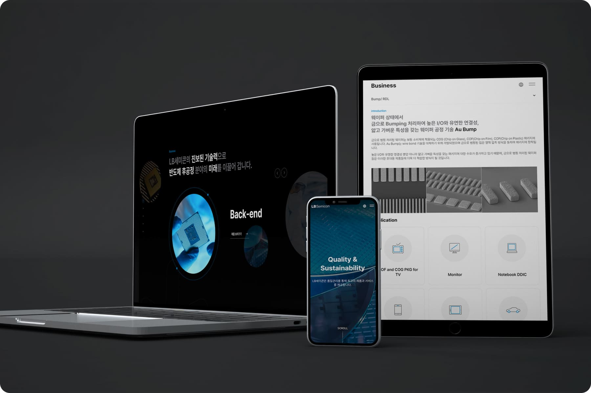
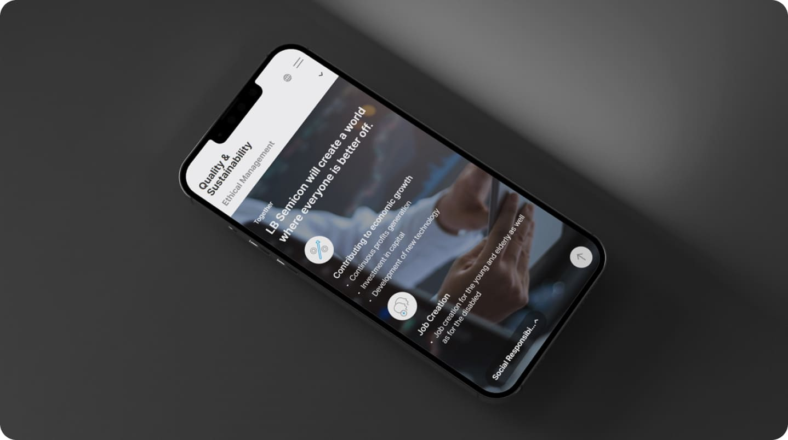

LB Semicon

2023
LB Semicon
(ROLE)
Main Front-end Developer(70%)
(RECOGNITION)
Achieved a 33% increase in LB semicon (6k → 8k)
GDWEB DESIGN AWARDS Winner Prize
I participated in the production of the official website of LB Semicon, a semiconductor post-process company.
Built as a responsive website that can give you a consistent user experience on mobile, tablet, and PC. As the main publisher, I was in charge of developing interactions, moving icons, and overall layouts that are in charge of screen movement.
- 